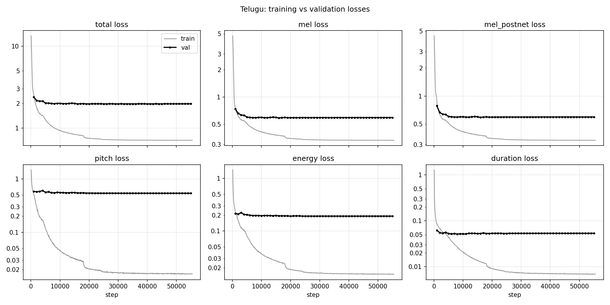
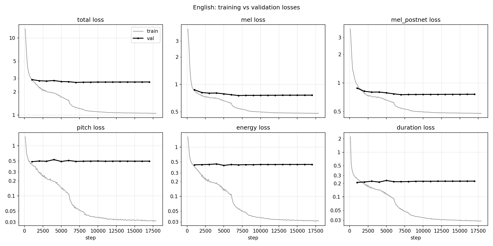

How to read this report. All numbers were measured in this project unless they are marked
paper (reported in the FastSpeech 2 paper [1]) or reference (taken from
the reference implementation [2] or its configuration files). Statements marked interpretation are
explanations that were not tested. Each measurement was produced by a scripted Kaggle job that records the code version it ran; the
jobs are listed in kaggle/README.md, and the files each number comes from are named in the text.
Intelligibility was measured with automatic speech recognition (TE_ASR_BOX), with the recognisers pinned to exact versions. No listening test was run, so the report makes no claim about perceived naturalness. Sections 5.1 to 5.3 and 7, and the extra sentences in Sections 7.3 and 7.4, go beyond what the assignment asks.
| English (Svarah) | Telugu (IndicTTS) | |
|---|---|---|
| Training data used: hours (utterances) | 4.87 h (3,077) | 4.90 h (2,140) |
| Validation data used: hours (utterances) | 0.98 h (742) | 1.01 h (446) |
| Speakers in training (Section 2.1) | 110 profiles | 2 |
| Training steps | 17,949 | 55,524 |
| Training time and hardware | 211 min, 1 T4 GPU | 480 min, 2 T4 GPUs |
| Validation loss, total: lowest (step) and last | 2.651 (7k), 2.686 | 1.970 (16k), 1.974 |
| Duration error on validation (frames) and log-duration correlation | 2.81, 0.58 | 1.06, 0.85 |
| Pitch error on validation (Hz) and correlation, per phone | 34.6, 0.35 | 29.2, 0.76 |
| Character error rate on validation, synthesis vs copy-synthesis a | 15.7 % vs 11.6 % | TE_VAL_ASR_GLANCE |
| Character error rate on the five test sentences b | EN_TEST_GLANCE | TE_TEST_GLANCE |
| Real-time factor, T4 GPU and 4-thread CPU | 0.027, 0.35 | 0.026, 0.37 |
a Whisper large-v3 [8] on 150 validation utterances; copy-synthesis is the real recording's mel-spectrogram passed through the same vocoder, i.e. the best this vocoder and recogniser allow. Whisper is weak on Telugu (Section 7). b English: final configuration, after Whisper's English text normaliser. Telugu: after mapping Kannada-script output back to Telugu; much of the remaining error is recogniser formatting, Latin script in T1 and digits in T4 (Section 5.5).
All required outputs are in the repository: ten generated test sentences, thirty variance-adaptor plots, and training- and validation-loss plots for both languages (checklist in the Appendix). Every test sentence passes the run-time checks: the predicted durations sum to the mel length, no phone has zero length, and the audio is finite and not silent.
Beyond the brief, the report contains an evaluation on every held-out utterance (Section 7); a diagnosis of where quality is lost and three remedies (Sections 5.1 to 5.3); a check that the Telugu aligner's access to the validation clips does not bias the results (Section 2.2); 34 further sentences of our own, not from the assignment (Sections 7.3 and 7.4); and twelve fixes to the reference code (Section 1.3).
The starting point is ming024/FastSpeech2 [2] (MIT licence), an implementation of FastSpeech 2 [1], vendored with the modifications in Section 1.3. The model is the
non-autoregressive FastSpeech 2 acoustic model:
| FastSpeech 2 paper [1] | Reference code [2] | This project | |
|---|---|---|---|
| Training data | LJSpeech, 24 h, 1 speaker | configs for LJSpeech, AISHELL-3, LibriTTS | about 5 h per language |
| Pitch target | frame-level F0, continuous wavelet transform | F0 averaged per phone, no wavelet transform | as the reference code |
| Decoder layers | 4 | 6 | 6 |
| Dropout | 0.1 | 0.2 | 0.2 |
| Batch size | 48 | 16 | 16 |
| Training steps | 160k | 900k (LJSpeech config) | 17,949 (English), 55,524 (Telugu) |
| Vocoder | Parallel WaveGAN | HiFi-GAN or MelGAN | HiFi-GAN "universal" [3] |
| Listening test (MOS) | 3.83 ± 0.08 | not reported | not run |
| Real-time factor, with vocoder | 1.95 × 10−2 (V100 GPU) | not reported | 2.6 to 2.7 × 10−2 (T4 GPU) |
The paper's figures cannot be compared directly with ours: the data (24 h of one speaker against about 5 h), the vocoder and the GPU all differ. Phone-averaged pitch is also used by FastPitch [10].
text/telugu/g2p.py, phones.py): Telugu script is close to phonemic, so it is
converted by deterministic rules on the Unicode Telugu block: a consonant carries the inherent vowel /a/ unless a vowel sign or
virama follows; a vowel sign replaces it; the anusvara (ం) becomes the nasal homorganic with the next consonant (బలంగా →
b a l a ng g aa, ఉంచండి → u ny c a nn dd i), otherwise /m/; visarga → /h/. 50 phone labels in ASCII
(retroflex consonants doubled: tt dd nn ss ll; aspirates with h; long vowels doubled). Every code point must be
consumed by a rule, otherwise an error is raised, so characters are never dropped silently.text/telugu/normalize.py): Telugu number words for cardinals, ordinals and times:
2026 → రెండు వేల ఇరవై ఆరు, 12వ → పన్నెండవ,
10:45 → పది నలభై ఐదు.MODIFICATIONS.md, which also has a one-table summary of all Telugu work).text/telugu/latin.py).tools/replot.py, redrawn from the saved numbers), so conjuncts and vowel signs are not broken.text/english_frontend.py): times ("10:45 AM" → "ten forty five A M", AM/PM as letter names),
numbers and years (reference inflect rules: 2026 → "twenty twenty six"); homographs known to g2p_en (conduct)
resolved by part of speech over the whole sentence; pronunciations from the LibriSpeech lexicon [14] (the lexicon used for alignment);
g2p_en [13] for out-of-vocabulary words; punctuation → short pause sp. Every decision is recorded per word in
frontend_trace.json; the test text itself is never changed.english_us_arpa acoustic model with the LibriSpeech lexicon + g2p_en for
out-of-vocabulary words (6,388 words, 0 without pronunciation).Twelve fixes (M1–M12) and four language-support changes (L1–L4) are listed in MODIFICATIONS.md with the original
behaviour, the reason, the new behaviour and the test that covers it. The ones that change results:
| # | Problem in the reference | Fix |
|---|---|---|
| M1 | Energy embedding received the pitch control value | uses e_control |
| M5 | Utterances without a TextGrid added the previous utterance's pitch/energy to the normalisation statistics | statistics only from processed utterances |
| M6 | Empty TextGrid intervals (MFA ≥ 2 writes pauses this way) were dropped, so pauses vanished from phone sequences and durations | kept as sp |
| M9 | float64 energy targets: backward() failed ("Found dtype Double") | cast to float32 |
| M10 | numpy-scalar learning rate in checkpoints, rejected by torch.load(weights_only=True) | float() |
| M12 | Pitch/energy controls multiplied the z-normalised value: for a voice below the corpus mean, pitch × 1.2 lowered F0 (126 → 113 Hz) | scale in Hz / energy units; now × 1.2 → 126 → 157 Hz (en, former voice, commit a2c8afe), 209 → 252 Hz (te) |
Others: CPU-safe STFT (M2), librosa ≥ 0.10 keyword API (M3), UTF-8 file handling (M4, M7), sorted speaker ids (M7),
map_location/weights_only loading and HiFi-GAN paths (M8), masks on the input's device (M11).
All compute ran as Kaggle script jobs that clone the repository and record the commit. Every job except the data-ingest and data-accounting jobs first runs the test suite (64 tests at the Telugu training job, 108 in the last jobs: frontends, symbol tables, split leakage, preprocessing, model forward/backward on every test sentence, checkpoint round trip, plots, prosody and clarity rules) and stops if a test fails; a CPU rehearsal ran every stage on a small real subset before the full runs. The training job measures throughput for 300 steps, sizes the schedule to a time budget, and runs a dry run of inference and plotting on that 300-step checkpoint before the long training. A watchdog kills a training process that exceeds its budget or stops logging; it was added after the first English run hung inside training (two-GPU DataParallel) and was killed at Kaggle's 12-hour limit with no checkpoint. The rerun used one GPU and completed.
| Part | Origin | Our change | Evidence |
|---|---|---|---|
| Model (encoder, variance adaptor, length regulator, decoder, PostNet), loss, optimizer | ming024/FastSpeech2 @ d4e79eb | none to the architecture; encoder vocabulary sized per language (L3); control fixes M1, M12; device fixes M11 | diff vs upstream: model/fastspeech2.py, model/loss.py, transformer/Layers.py unchanged |
| Hyper-parameters | reference LJSpeech configs | max_seq_len 1000 → 1500 (clips up to 15 s); steps and LR decays sized to a time budget | English/config.yaml, Telugu/config.yaml |
| Vocoder | reference: pretrained HiFi-GAN "universal" | none (a fine-tune was tried and not adopted, Section 5.2) | hifigan/ unchanged |
| English text → phones | reference: LibriSpeech lexicon, g2p_en, English cleaners, number rules | new inference frontend with traced decisions and general rules (Section 1.2) | text/english_frontend.py, tests |
| Telugu text → phones | nothing in the reference | new: normaliser, rule-based G2P, 65-symbol table, Latin-script mapping | text/telugu/, text/symbols.py, tests |
| Data loaders, split | reference: LJSpeech/AISHELL-3/LibriTTS loaders, unseeded random split | new HF ingest, candidate filter, group split with leakage checks | data/ingest.py, data/select_split.py |
| Alignment | reference: MFA run externally | English: MFA pretrained english_us_arpa; Telugu: MFA acoustic model trained here | data/mfa_prepare.py, kaggle/pipeline.py |
| Feature extraction | reference preprocessor | bug fixes M5–M7; manifest-driven split | preprocessor/preprocessor.py |
| Inference, plots, evaluation, post-processing | reference: synthesize.py only | new (inference with checks, variance plots, evaluation, GV post-filter, prosody and clarity options) | inference.py, plotting.py, evaluate_val.py, ... |
| Data, checkpoints | datasets named by the assignment; no checkpoints supplied | both models trained here from random initialisation | job records fs2-03-train-* |
Shapes recorded with forward hooks on both models (batch 1; L phones including pauses, T mel frames):
| Stage | Component | Output |
|---|---|---|
| text → phones | English frontend / Telugu normaliser + G2P (language-specific) | phone list + per-word trace |
| phones → ids | text_to_sequence (table per language; unknown symbol raises) | (1, L) int64 |
| embedding + encoder | Encoder: embedding, sinusoidal positions, 4 FFT blocks | (1, L, 256) |
| speaker | speaker_emb, added to every position | (1, 256) → broadcast |
| variance predictors | duration (log), pitch, energy, one value per phone | (1, L) each |
| pitch / energy embedding | 256-bin quantisation → nn.Embedding(256, 256), added | (1, L, 256) |
| length regulator | repeat phone i di times, T = Σdi | (1, T, 256) |
| decoder → mel | 6 FFT blocks, Linear(256, 80), PostNet (residual) | (1, T, 80) log-mel |
| vocoder | HiFi-GAN universal, input (1, 80, T) | 256·T samples at 22,050 Hz |
In training (and in the validation loss of Section 4) the ground-truth duration, pitch and energy are embedded and used by the length regulator; the predictors are trained against them. At inference the predictions are used. Everything below the frontend and the symbol table is language-independent code, trained separately per language; the two models share no weights.
Both datasets are larger than the 5 h + 1 h budget, so a deterministic, duration-targeted selection was used
(data/select_split.py). Only the two specified datasets are used, Svarah [4] and IndicTTS Telugu [5], from Hugging Face at pinned revisions
(ai4bharat/Svarah, SPRINGLab/IndicTTS_Telugu).
data/ingest.py): clips of 1–15 s with a non-empty transcript and non-silent audio. Svarah (Hugging Face split "test", 6,656 clips): 1,476 clips outside 1–15 s were excluded, leaving 5,180 candidates (7.97 h). IndicTTS Telugu (8,576 clips): 3,201 outside 1–15 s and 47 whose transcript the Telugu G2P cannot convert (mostly a Latin "o" typed in place of the anusvara) were excluded, leaving 5,328 candidates (11.84 h; female 3.77 h, male 8.07 h). No duplicate audio was found. Excluded transcripts were logged, not repaired (Kaggle fs2-01-ingest, Evaluation/Data/job_records/).--balance equal), because their candidate audio differs (3.77 h vs 8.07 h); a group goes to
validation if it fits all validation quotas it touches, else to training if it fits, else it is not used.| English (Svarah) | Telugu (IndicTTS) | |
|---|---|---|
| Selected train | 3,079 utt. · 4.87 h · 110 speaker profiles | 2,164 utt. · 4.96 h (female 2.41 h, male 2.55 h) |
| Selected validation | 742 utt. · 0.98 h · 109 speaker profiles | 450 utt. · 1.02 h (0.51 h each) |
| Not aligned by MFA | 0 | 28 (1.1 %), mostly in runs of near-consecutive ids |
| Rejected in preprocessing | 2 (≤ 1 voiced frame) | 0 |
| Used for training / validation | 3,077 / 742 | 2,140 / 446 |
| Hours used, train / validation (selected audio) | 4.87 / 0.98 h | 4.90 / 1.01 h |
| Same, after leading/trailing silence trimming (mel frames) | 4.53 / 0.92 h | 4.21 / 0.87 h |
| Overlap of the used sets: ids / transcripts | 0 / 0 | 0 / 0 |
Hours and overlaps of the used sets: Kaggle fs2-13-data-accounting, Evaluation/Data/accounting.json.
The unaligned Telugu clips are mostly in runs of near-consecutive ids (te_00915–00929: 6, te_01062–01072: 3, te_02330–02333: 4,
te_02638–02654: 11; the other 4 lie between te_00111 and te_00191), which suggests transcript/audio mismatches in those
ranges rather than random failures interpretation; they were excluded, not repaired. Svarah validation speaker profiles
also appear in training (different recordings), and both Telugu speakers are in both splits: the split is by recording / sentence, not by speaker, so the validation sets measure
generalisation to new sentences, not to new voices.
english_cleaners (lower case, numbers and abbreviations spelled out), keeping letters and apostrophes; pronunciations from the LibriSpeech lexicon with g2p_en for missing words. Telugu transcripts through the Telugu normaliser; pronunciations from the Telugu G2P. The inference frontends use the same lexicon, G2P and phone sets.tools/aligner_check.py, Kaggle fs2-18-aligner-check,
Evaluation/Data/aligner_check.json):
| Second aligner (training clips only) vs the one used | Validation clips (445) | Training clips (2,139) |
|---|---|---|
| Phones whose duration is within 1 frame (11.6 ms) / identical | 95.4 % / 66.8 % | 96.1 % / 69.1 % |
| Mean phone-boundary shift (95th percentile) | 2.7 ms (10 ms) | 2.6 ms (10 ms) |
| Clips with the same phone sequence (the others differ only in where a short pause was placed) | 363 | 1,951 |
Both models use the reference architecture and optimiser settings (Section 1.1); only the length of training differs.
| Setting | English | Telugu |
|---|---|---|
| Trainable parameters | 35.44 M | 35.34 M |
| Symbol table / speaker table size | 360 / 110 | 65 / 2 |
| Batch size | 16 | 16 |
| Planned steps | 20,000 | 56,000 |
| Learning-rate decays (× 0.3) | 6k, 8k, 11k | 18k, 24k, 31k |
| Throughput in the 300-step probe | 1.45 steps/s | 2.08 steps/s |
| Time budget | 210 min | 480 min |
| Steps completed (stopped by the budget) | 17,949 | 55,524 |
| Training time | 211 min | 480 min |
| Hardware | 1 T4 GPU | 2 T4 GPUs |
Settings common to both: Adam with β = (0.9, 0.98) and ε = 10−9; the warm-up schedule of [16] over 4,000 steps; learning-rate
decays at 1/3, 4/9 and 5/9 of the planned steps, the same proportions as the reference's 300k, 400k and 500k of 900k; gradient clipping at
1.0; length-sorted groups of four batches; 32-bit floating point; random seed 1234. Validation runs every 1,000 steps on the full
validation set and records the six losses, the duration error and the total-length error (val_diagnostics.csv). The parameter
difference comes from the symbol embedding (75,520 parameters) and the speaker embedding (27,648).
The English budget was cut from 8 h to 3.5 h for the rerun because the Telugu validation total had come within 2 % of its final value by step 7k (Section 4); this also saved GPU quota and shortened the exposure to another session failure. Exact configs:
English/config.yaml, Telugu/config.yaml, and as run: Results/<Lang>/train_config_used.yaml.

training_loss.png and validation_loss.png are in Results/Telugu/.
Results/English/).| Validation loss | English lowest (step) | English last | Telugu lowest (step) | Telugu last |
|---|---|---|---|---|
| total | 2.651 (7k) | 2.686 | 1.970 (16k) | 1.974 |
| mel after PostNet | 0.753 | 0.760 | 0.589 | 0.595 |
| pitch (z-units²) | 0.483 | 0.495 | 0.537 | 0.538 |
| energy | 0.427 | 0.445 | 0.192 | 0.192 |
| log-duration | 0.211 | 0.226 | 0.052 | 0.054 |
| final training total | 1.049 | 0.707 | ||
What the validation loss measures. It is computed like the training loss: the ground-truth duration, pitch and energy of each
validation utterance drive the length regulator and the embeddings (evaluate.py). The mel terms therefore measure reconstruction
with the true prosody, and the duration, pitch and energy terms measure the predictors on unseen phones. Free-running quality is
measured separately in Section 7.
Convergence. The total training loss falls from 13 to ≈ 2 in the first 2k of the 4k warm-up steps, then slowly. The learning-rate decays show as steps: the mean training loss of the 1,000 steps after the first decay is 18.7 % (English, 6k) and 5.6 % (Telugu, 18k) below that of the 1,000 steps before, against 7.3 % and 2.2 % in comparison windows without a decay; the later decays change it by 6.2 % or less. The validation total is within 2 % of its final value from step 5k (English) and 7k (Telugu) onwards.
Stability. No logged training loss exceeds 1.3× the median of its neighbours (no spikes), no divergence, no non-finite losses (the trainer stops on any non-finite value; both runs stopped at their time budget).
Over-fitting. The gap between training and validation grows throughout: by the end (mean of the last 10 training logs) the training pitch loss is ~32× lower than validation for Telugu and ~15× for English, the energy loss ~13× and ~14×. The variance predictors show by far the largest train/validation gap (the mel terms 1.6–1.8×). For Telugu it is benign: the validation total ends within 0.2 % of its best; only the duration term ends 3.7 % above its minimum (8k). For English there is mild over-fitting: validation pitch, energy and duration losses end 2.6–6.9 % above their minima (reached at 1k–5k steps), and the total 1.3 % above its minimum (7k). The last validation is at 17k (English) and 55k (Telugu); the released checkpoints (17,949 and 55,524 steps) were not validated separately. Early stopping on the validation total (minimum at 7k steps) would give a slightly better English model and save time; the released checkpoint is the last one interpretation.
English vs Telugu level. English validation losses are higher in every term except pitch. The two runs differ in data (110 speaker profiles of ≈ 2.7 min each with varying recording conditions, Section 5.1, against two speakers with ~2.5 h each), frontend and training length (17,949 vs 55,524 steps), so the difference cannot be attributed to the language interpretation.
Audio: Results/<Lang>/test_generated_audios/. Voices: English svarah_8a8e2655 (chosen by recording
clarity, Section 5.1); Telugu te_female (lower HiFi-GAN copy-synthesis error than te_male: mel L1 0.378
vs 0.394 on 20 validation clips each). Pronunciation is assessed by transcribing each wav with an
ASR model and comparing it with the frontend's normalised text (character error rate, CER); for English the CER is also given after
Whisper's English text normaliser, which removes pure formatting differences ("10:45" vs "ten forty five").
Test text, as provided. The ten sentences are taken character for character from the text layer of the assignment PDF
(PyMuPDF), which matches the rendered page; they are stored with their Unicode code points and SHA-256 in
tests/test_sentences.json, and every inference run refuses a sentence whose hash differs. Other text extractions of the
same PDF (pypdf, the Word copy) detach or reorder Telugu vowel signs (e.g. "విశ్లషే ించారు" for "విశ్లేషించారు"), so they were not used.
Spacing in the given text is kept as is, including "rhyth m" (E3) and "అడ విలో" (T3); the frontends only decide how such text is
pronounced, and frontend_trace.json records the original text next to the model input. For "rhyth m" the English frontend
joins the pieces (read literally, "m" becomes the letter name: the first full run said "rythe em", Section 5.4); for "అడ విలో" no rule is needed,
because the Telugu input has no word-boundary symbol and the split gives exactly the phones of అడవిలో.
The first English outputs (voice svarah_71f88d2a, chosen because it has the most training audio) sounded muffled. A Praat
analysis [12] (tools/acoustic_analysis.py) and a diagnostic job (fastspeech2/diagnose_quality.py, Kaggle
fs2-07-diagnose, Evaluation/Diagnosis/) located the cause. For 24–30 validation clips of each test voice it compares
the natural recording, copy-synthesis (ground-truth mel → HiFi-GAN), FastSpeech 2 with ground-truth duration/pitch/energy (oracle) and
free-running FastSpeech 2, band by band (long-term spectrum, dB relative to the natural recording):
| Band (Hz) | 0–500 | 500–1k | 1k–2k | 2k–4k | 4k–6k | 6k–8k |
|---|---|---|---|---|---|---|
| English, copy − natural | −0.1 | +0.7 | +0.5 | +0.8 | +1.0 | +1.1 |
| English, free-running − natural | −0.3 | +3.1 | 0.0 | +3.1 | +3.9 | +1.9 |
| Telugu, copy − natural | 0.0 | +0.4 | −0.7 | +0.1 | +0.2 | 0.0 |
| Telugu, free-running − natural | +0.3 | −0.3 | −2.4 | −1.9 | −1.1 | −0.2 |
On these clips (the first English voice and te_female) neither the vocoder nor the acoustic model removes high-frequency energy: both reproduce the recording to within ~1 dB (copy) and
~4 dB (free-running) in every band, and HNR, jitter and shimmer of all four versions are within 1.8 dB / 0.4 % / 1.2 % of each other (above 8 kHz, outside the mel range, the recordings have almost no energy and all synthetic versions add a low floor; not shown).
The muffled sound was the voice's own recordings: ranking all 110 training speaker profiles by the clarity of their recordings
(1–4 kHz band share + HNR/2, three training clips each, clarity_en.json) put svarah_71f88d2a 109th of 110
(1–4 kHz band −23 dB); recording conditions vary by speaker. The test sentences were rendered in the four
clearest voices; svarah_8a8e2655 (rank 2, 1–4 kHz band −9.7 dB) had the lowest jitter and shimmer of the four and is used
for all English outputs. The checkpoint is unchanged; only the speaker embedding chosen at inference differs. Effect at the time (means
over the five English sentences, Praat): spectral centre of gravity 298 → 623 Hz, jitter 1.18 → 0.51 %, shimmer 11.1 → 8.9 % (Evaluation/Diagnosis/voice_choice.json). The selection rule was changed after
listening to the first outputs; it is an objective rule on training recordings, and the earlier outputs remain in the repository history
(commit 8f5ae5f).
The band-energy comparison above cannot see whether spectral detail is preserved. Measuring the variance of each log-mel bin over
time ("global variance", GV) and the mean frame-to-frame change (flux), on 6 of the held-out clips per language (the ones whose audio the
job kept; English: the first voice), shows over-smoothing, a known weakness of FastSpeech 2 (its decoder is trained with an L1 loss on the mel here, and regression losses
are known to average out spectral detail; we measured the reduced variance, not its mechanism). English free-running mels keep 80–88 % of the natural GV (three mel-band groups) and 80 % of its flux, and with ground-truth
duration, pitch and energy 73–91 % and 79 % (so it is the decoder, not the variance predictors); copy-synthesis keeps 97–101 %. Telugu
free-running keeps 93–98 % and 93 % of the flux (Evaluation/Diagnosis/gv_bands.json; a 6-clip measurement). A plausible reason, not tested, is that with 110 speaker
profiles of ~2.7 min each the English decoder averages over very different voices and recording conditions interpretation.
Remedy 1: GV post-filter (adopted for English). fastspeech2/postfilter.py rescales each mel bin's deviation from
its utterance mean by rks/2, where rk is the ratio of natural to predicted
variance, estimated once on training clips of the test voice (Results/English/gv_ratio.json), as in statistical
parametric synthesis (global-variance compensation [9]). Inference only. Ratio estimated on 29 training clips (Telugu voice: 40); scored on the test voice's 9 held-out clips (Telugu: 25)
(Evaluation/Postfilter/, Kaggle fs2-08-postfilter):
| English, strength s | GV / natural | flux / natural | HNR (dB) | shimmer (%) | MCD (DTW) |
|---|---|---|---|---|---|
| 0 (off) | 0.76 | 0.62 | 16.9 | 8.2 | 36.7 |
| 0.5 | 0.90 | 0.67 | 17.4 | 8.1 | 37.6 |
| 1.0 (used) | 1.04 | 0.71 | 17.6 | 7.9 | 38.6 |
| Telugu 0 → 1.0 | 0.97 → 1.00 | 0.81 → 0.81 | 18.0 → 17.9 | 8.0 → 7.6 | 29.7 → 29.9 |
The post-filter restores the variance completely and part of the temporal sharpness; HNR rises by 0.7 dB and shimmer falls by 0.4 points (9 clips, small changes); MCD rises slightly because it rewards averaged spectra (a known property of MCD). Telugu is not over-smoothed (r ≈ 1.02, no measurable change), so its outputs are left unfiltered.
Remedy 2: HiFi-GAN fine-tuning on ground-truth-aligned mels (tried, not adopted). The vocoder was fine-tuned per language on
FastSpeech 2's teacher-forced mels of the training set, paired with the recordings cut exactly as the preprocessor cuts them, with
discriminators (MPD + MSD, from the original HiFi-GAN code [3]) trained from scratch because the reference ships only the generator
(fastspeech2/vocoder_finetune.py, Kaggle fs2-09-vocoder-ft-*; Evaluation/VocoderFinetune/summary.json).
| Universal → fine-tuned | val. mel L1 (GTA) | Whisper CER, synthesis | Whisper CER, copy-synthesis | other |
|---|---|---|---|---|
| English | 0.866 → 0.850 | 15.7 → 15.3 % | 11.6 → 12.3 % | GV ratio 0.91 → 0.87; copy-synthesis HNR 14.9 dB vs 17.1 natural |
| Telugu | 0.671 → 0.600 | 35.8 → 35.5 % | 33.1 → 31.0 % | GV ratio 1.00 → 0.94 |
The fine-tuned vocoders fit the training mels better but did not make the synthesis clearer and made some outputs worse, so the universal HiFi-GAN is kept for both languages. The likely reason is the short adversarial training with discriminators started from scratch (fine-tuning normally starts from trained discriminators and runs far longer) interpretation.
Remedy 3: speaker adaptation of the decoder (tried, not adopted). The trained model was fine-tuned on the test voice's
29 training clips only (encoder frozen), with the step chosen on its 9 validation clips (fastspeech2/adapt_speaker.py,
Kaggle fs2-11-adapt-en, Evaluation/Adaptation/). The training mel loss fell from 0.47 to 0.38, but the held-out
clips improved only up to step 100–150 and then got worse; the gains (≤ 0.5 MCD on 9 clips) are within noise and the voice-quality
measures do not move: with 2.7 min of one voice, the decoder fits the training clips without improving on the held-out ones. The unadapted model is kept.
Listening to the English outputs exposed three further problems. Each was measured, and each remedy acts at inference time
(fastspeech2/clarity.py, prosody_rules.py); the model weights are unchanged. The model's own predictions are
kept in every variance file and drawn in every plot (Section 6), so nothing here hides what the variance adaptor predicted.
Results/English/noise_profile.json). Remedy: subtraction of that floor in the mel domain. Quietest frames
CLARITY_QUIET_BEFORE → CLARITY_QUIET_AFTER; speech level CLARITY_SPEECH_BEFORE → CLARITY_SPEECH_AFTER (unchanged)
(tools/clarity_measure.py on E1–E4, model-only vs final; Evaluation/English/clarity_levels.json).Model-only renders of the five English test sentences (no inference-time option and no post-filter; the same frontend) are
in Evaluation/English/model_only/ for comparison.
| ID | Duration | Whisper large-v3 transcript of the generated audio | CER, raw | CER, normalised |
|---|
Frontend decisions (recorded in frontend_trace.json; the test text itself is unchanged):
Frontend decisions (recorded in frontend_trace.json):
Each test sentence has three plots in Results/<Lang>/variance_adaptor_plots/:
There is no ground truth for the test sentences, so this section describes what the model predicts; it does not evaluate it. For
English, where inference-time options are used, each plot shows both the model's own prediction (hollow circles on the duration plot,
dashed grey steps on pitch and energy) and the final values used for the audio (bars and solid black steps). The analysis describes the
model's prediction first and then what the options changed. The numbers behind every plot are in variance_raw/<ID>.json;
the per-word figures come from tools/word_stats.py.
fastspeech2/stress_stats.py, Kaggle fs2-15-stress-stats).generated_f0_hz) follows the predicted phone-level F0: on voiced frames the median deviation is 27–51 cents per sentence (under half a semitone) and the frame-level correlation 0.50–0.97, so the decoder and vocoder realise the predicted pitch; in the plots the larger deviations sit at phone boundaries and on short phones, as expected from step-wise phone-level targets.Both models were evaluated on every validation utterance (never trained on), each synthesised with its own speaker and without
any inference-time option (fastspeech2/evaluate_val.py, Kaggle fs2-04-eval, fs2-06-eval-fix). Silence
phones are excluded from duration/pitch/energy metrics.
| Metric | English (742 utt.) | Telugu (446 utt.) |
|---|---|---|
| Duration MAE (frames, 11.6 ms) / Pearson r of log(1+d) | 2.81 / 0.58 | 1.06 / 0.85 |
| Total utterance length, relative error | 11.7 % | 4.5 % |
| Phone-level pitch RMSE / Pearson r | 34.6 Hz / 0.35 | 29.2 Hz / 0.76 |
| Phone-level energy RMSE / Pearson r | 26.8 / 0.78 | 17.4 / 0.90 |
| Mel-cepstral distortion*, ground-truth duration/pitch/energy (DTW) | 36.6 | 26.1 |
| Mel-cepstral distortion*, predicted duration/pitch/energy (DTW) | 39.0 | 30.9 |
| Whisper large-v3 CER / WER, our synthesis (150 utt.) | 15.7 % / 21.5 % | TE_SYN_CER |
| Same, copy-synthesis ceiling (ground-truth mel → same HiFi-GAN) | 11.6 % / 13.8 % | TE_COPY_ROW |
* Computed from the model's own 80-band log-mel (orthonormal DCT, c1–c24), averaged over DTW-aligned frames. This is not the WORLD/SPTK mel-cepstrum MCD [15] reported in papers; it is comparable only within this table. CER/WER are corpus-level (total edits / total reference length) after lower-casing and removing punctuation; CER ignores spaces. TE_ASR_NOTE
Reading the table. (1) The variance predictors add a small part of the distortion: replacing ground-truth duration, pitch and energy by predictions raises the distortion by 2.4 (en) and 4.8 (te); most of the remaining error is in the decoder itself. (2) Telugu prosody is predicted with much higher correlation than English (pitch r 0.76 vs 0.35; duration r 0.85 vs 0.58). A plausible reason is that two speakers reading prepared text vary less than Svarah's 110 speaker profiles; data, speakers and training length (3.1× more steps for Telugu) are confounded, so this is not established interpretation. (3) For English the intelligibility gap to the vocoder ceiling is 4.1 points of CER: the acoustic model loses some intelligibility, but most of the error (11.6 of 15.7 points) is already present in copy-synthesis of the real recordings. TE_READING
| Real-time factor (compute s / audio s), batch 1, warm | English | Telugu |
|---|---|---|
| GPU (Tesla T4): acoustic model / HiFi-GAN / total | 0.0079 / 0.0193 / 0.027 | 0.0070 / 0.0186 / 0.026 |
| CPU (4 threads, fp32, 20 utterances): acoustic / HiFi-GAN / total | 0.029 / 0.322 / 0.350 | 0.026 / 0.339 / 0.366 |
On a T4 one second of speech takes 26–27 ms (37–39× faster than real time); the paper reports RTF 1.95 × 10−2 on a V100 with Parallel WaveGAN paper. On a CPU the acoustic model is still 35–38× faster than real time; the vocoder dominates (92–93 % of the time), so a lighter vocoder is the lever for CPU deployment. Timing excludes the text frontend; CUDA is synchronised before each reading; one untimed warm-up call.
Each control factor was applied to one sentence per language (E2b and T2a), and the length, median F0 and RMS level of the audio were measured.
| Control (factor) | English: length / median F0 / RMS | Telugu: length / median F0 / RMS |
|---|---|---|
| none | 4.55 s / 206 Hz / 0.146 | 2.46 s / 209 Hz / 0.148 |
| duration 0.8 / 1.25 | 3.37 s / 5.42 s | 1.88 s / 3.02 s |
| pitch 0.8 / 1.2 (after M12) | 169 Hz / 245 Hz | 165 Hz / 252 Hz |
| pitch 0.8 / 1.2 (reference code) | 140 / 113 Hz: inverted c | 204 / 209 Hz: almost no effect d |
| energy 0.8 / 1.2 (after M12) | RMS 0.126 / 0.164 | RMS 0.120 / 0.159 |
The duration control scales length close to the factor (0.74× and 1.19× for English; 0.76× and 1.23× for Telugu; rounding of per-phone frames explains the difference). Pitch control after M12 is near-proportional (×0.79/×1.20 for Telugu).
c Earlier English test voice, 126 Hz without control (Evaluation/English/metrics_validation.json).
d From the console log of Kaggle job fs2-04-eval; not stored as a file.
Sixteen further sentences, written for this project (not part of the assignment; Evaluation/stress_sentences.json), probe cases the test set does not: questions, homographs,
names, abbreviations, numbers, conjuncts, code-mixing, very long and very short sentences. English uses the final configuration; Telugu
the model as submitted.
Ten more sentences per language, supplied by the author (not part of the assignment; Evaluation/Extended/extended_sentences.json), extend each test sentence's difficulty
(long technical words, homographs, numbers and dates, clusters, questions and exclamations, long sentences). XE01 and XT01 are the test sentences E1 and T1 verbatim, XT04 is the first clause of T4, and XE02/XT02 combine the two E2/T2 sentences; several were used while developing the frontend rules (Section 1.2), so they are not a blind test.
| English | Telugu | |
|---|---|---|
| Data character | 110 speaker profiles, ~2.7 min each, Indian-accented, recording conditions vary by speaker | 2 speakers, ~2.5 h each, read speech |
| Text → phones | irregular spelling: lexicon + neural G2P; homographs, out-of-vocabulary words and normalisation are the main risks | near-phonemic script: deterministic rules cover every word; risks are normalisation and loanwords |
| Prosody prediction (validation) | lower: pitch r 0.35, duration r 0.58; lexical stress barely marked, as in the data | higher: pitch r 0.76, duration r 0.85 |
| Over-fitting | mild (validation total lowest at 7k, +1.3 % by 17k) | minimal (total +0.2 % after 16k; duration term +3.7 %) |
| Output quality without inference-time help | over-smoothed decoder, recording noise reproduced, endings cut; needs the post-filter and clear-speech options (Sections 5.2–5.3) | not over-smoothed; used as the model produces it |
| Phrase structure | pause at the E4 comma with no pitch reset after it in the model's prediction | pause at the T4 comma followed by a clear pitch reset (208 → 270 Hz) |
| Main failures on the test set | EN_FAILURES | TE_FAILURES |
Evaluation/English/model_only/) is less
clear. They are rules, not learned: they fire on punctuation and word length, not on meaning.Evaluation/Extended/Telugu/XT09_te.wav), i.e. with statement intonation; the "?" is
not part of the model input.Software (as run on Kaggle): Python 3.13, PyTorch 2.11.0 (CUDA 12.8 on T4; CPU build for data jobs), librosa,
pyworld, tgt, g2p_en, MFA 3.4.3 (conda-forge, via micromamba), transformers 5.16.1 (validation evaluation) and 5.20.2 (later jobs; evaluation only). Full package lists are in
each job's environment.txt; requirements.txt lists the minimum versions. Data: Svarah and IndicTTS Telugu from
Hugging Face at pinned revisions (data/ingest.py); ASR models at pinned revisions (evaluate_val.ASR_REVISIONS).
Configuration: English/config.yaml, Telugu/config.yaml (preprocess / model / train sections; step values as
used), and the exact configs as run in Results/<Lang>/train_config_used.yaml.
Commands (data root D; Telugu shown, then the English lines that differ):
cd fastspeech2
python -m data.ingest --lang te --cache /tmp/hf --out D # needs a Hugging Face token
python -m data.select_split --manifest_dir D/manifests/te --train_hours 5 --val_hours 1 --balance equal
# English: --manifest_dir D/manifests/en (default --balance proportional)
python data/mfa_prepare.py --lang te --ingest_dir D --corpus /tmp/corpus_te \
--dict_out D/mfa_te/dictionary.txt
mfa train /tmp/corpus_te D/mfa_te/dictionary.txt D/mfa_te/model.zip \
--output_directory D/preprocessed/te/TextGrid
# English: mfa align /tmp/corpus_en D/mfa_en/dictionary.txt english_us_arpa \
# D/preprocessed/en/TextGrid --beam 100 --retry_beam 400
cd ..
python Telugu/preprocess.py --data_root D
python Telugu/train.py --data_root D --max_minutes 480
python Telugu/inference.py --data_root D --checkpoint Telugu/checkpoints/te_model.pth.tar \
--speaker te_female --out_dir Results/Telugu
python fastspeech2/evaluate_val.py --config Telugu/config.yaml --data_root D \
--checkpoint Telugu/checkpoints/te_model.pth.tar --speaker te_female --out_dir Evaluation/Telugu
# English (pretrained MFA aligner above; 210-minute budget = 17,949 steps)
python English/preprocess.py --data_root D
python English/train.py --data_root D --max_minutes 210
EN_INFERENCE_CMD
Checkpoints: GitHub release v1.0 (en_model.pth.tar, te_model.pth.tar; SHA-256 in
<Lang>/checkpoints/README.md). Inference alone needs only a checkpoint and the stats.json / speakers.json
in Results/<Lang>/. Kaggle jobs (kaggle/, listed in kaggle/README.md) reproduce every stage,
and each records the commit it ran. Tests: pytest.
| Assignment item | Where |
|---|---|
| Two separate models, English (Svarah) and Telugu (IndicTTS Telugu), ~5 h train / ~1 h validation each | Sections 2.1, 3; English/config.yaml, Telugu/config.yaml |
| Data selection and subsampling strategy; train/validation separate with no overlap | Section 2.1; fastspeech2/data/select_split.py; Evaluation/Data/accounting.json |
| Dataset preparation and preprocessing, both languages | Section 2.2 |
| Changes to the GitHub implementation for each language, particularly Telugu | Sections 1.2–1.3; MODIFICATIONS.md ("Telugu support at a glance", L1–L4, M1–M12, new files) |
| Speech for all test sentences, text preserved as provided | Results/<Lang>/test_generated_audios/ (E1, E2a, E2b, E3, E4; T1, T2a, T2b, T3, T4); Section 5 (text check) |
Folder structure: English/, Telugu/ (train.py, preprocess.py, inference.py, config.yaml, checkpoints/), Results/, Report/, README.md, requirements.txt | repository root |
| Trained checkpoints, separately per language | GitHub release v1.0, linked from <Lang>/checkpoints/README.md and README.md (files exceed GitHub's 100 MB limit) |
| Training- and validation-loss plots, both models | Results/<Lang>/training_loss.png, validation_loss.png; Section 4 |
| Variance-adaptor plots (duration, pitch, energy) for each test sentence, both languages | Results/<Lang>/variance_adaptor_plots/{duration,pitch,energy}/; Section 6 |
| Report: implementation, architecture, modifications | Section 1 |
| Report: data, subsampling, preprocessing, split, training configuration | Sections 2, 3 |
| Report: loss curves, convergence, instability, over-fitting | Section 4 |
| Report: generated speech per test sentence, pronunciation, quality | Sections 5.4, 5.5 |
| Report: variance-adaptor analysis per test sentence | Section 6 |
| Report: English vs Telugu, limitations, failures, improvements | Section 8 |
| Report: reproducibility (dependencies, configs, commands) | Section 9; README.md |